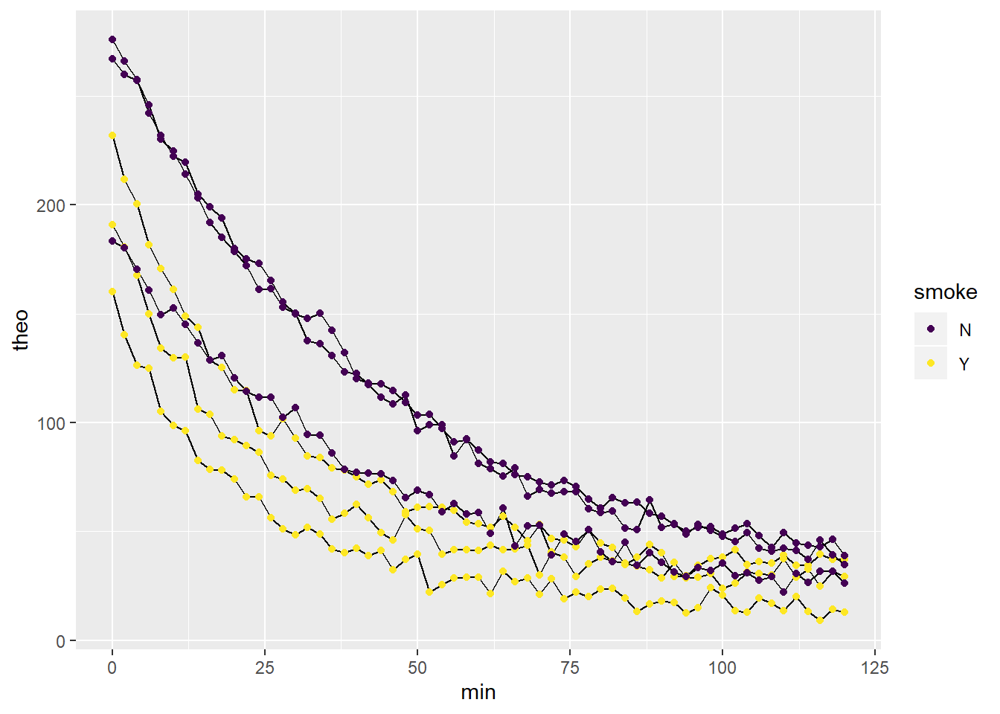

Chapter 40 Nonlinear regression of independent replicates
This chapter illustrates how to analyze independent replicates of nonlinear data while testing an hypothesis that a predictor variable changes an outcome response.
To some extent, this is a chapter about munging a lot of data into a form for nonlinear regression. Then it provides one common approach to conducting statistical inference on the results.
The scientific prediction is that exposing rats to cigarette smoke changes microsomal theophylline metabolism. Specifically, exposure of cigarette smoke will induce CYP2A1, leading to more rapid theophylline degradation. A hypothesis to test that prediction is that theophylline half-lives differ in microsomes from smoke exposed animals compared to unexposed.
The half-life of a drug, the time it takes for a given drug level to be reduced by half, is a critical parameter in drug metabolism studies. The metabolism of many (not all) drugs occurs by first order kinetics: \[C=C_0\times e^{-kt}\]
Here, \(C\) is the concentration of drug at time \(t\), \(C_0\) is the concentration at time zero. And \(k\) represents a first order rate constant, from which half-live values can be derived: \[k=\frac{log(2)}{t_{1/2}}\]
The data set contains the results of an experiment comparing in vitro theophylline metabolism using rat liver microsomal preps. One group of rats were housed in an environmental chamber laden with cigarette smoke. A second group serving as control was not exposed to smoke. Microsomes were prepared from each individual subjected to these treatments.
A non-saturating level of theophylline was added to microsomes and then measured (in ng/ml units) as a function of time in duplicate.
If CYP1A2 is induced by cigarette smoke in this model, theophylline should decay faster.
One phase half-lives will be calculated by an exponential decay function
\[y=y_{lo}+(y_{hi}-y_{lo})e^{-kx}+y_{lo}\] where k is the rate constant, x is time, in minutes, and yhi and ylo are the maximal and minimal levels of theophylline within each run.
You might wonder how I knew to select this model for this problem? That comes from experience and scientific judgement. If you’re interested in some phenomenon and notice someone is conducting nonlinear modeling, pay close attention to the nonlinear model they used!
40.1 The dataset
The experimental data are in two separate csv files. One file contains the replicates for the smoke-exposed rats (subjects Q, R and S). The other file contains the unexposed rats (subjects T, U and V). Each replicate is comprised of duplicate measurements.
It’s not unusual in this kind of work for the absolute values for the response variable to vary between replicates but be tight within replicates.
#stringsAsFactors prevents some warnings in later steps
smokers <- read.csv("datasets/smoketheo.csv", stringsAsFactors = F)
str(smokers)## 'data.frame': 61 obs. of 8 variables:
## $ min : int 0 2 4 6 8 10 12 14 16 18 ...
## $ smoke: chr "Y" "Y" "Y" "Y" ...
## $ q1 : num 194 184 172 148 132 ...
## $ q2 : num 188 177 163 152 136 ...
## $ r1 : num 161 141 118 122 108 ...
## $ r2 : num 159 139 135 128 102 ...
## $ s1 : num 236 208 198 178 169 ...
## $ s2 : num 228 216 204 185 172 ...## 'data.frame': 61 obs. of 8 variables:
## $ min : int 0 2 4 6 8 10 12 14 16 18 ...
## $ smoke: chr "N" "N" "N" "N" ...
## $ t1 : num 280 266 251 242 232 ...
## $ t2 : num 271 266 264 242 232 ...
## $ u1 : num 273 260 255 242 228 ...
## $ u2 : num 262 259 259 250 232 ...
## $ v1 : num 182 176 169 161 151 ...
## $ v2 : num 184 185 171 161 148 ...40.2 Munging for regression analysis
40.2.1 Average the technical replicates
We have a few data processing steps to clean things up. First, let’s average the technical duplicates for each time point.
smokers1 <- group_by(smokers, smoke, min) %>%
summarise(
q=mean(c(q1,q2)),
r=mean(c(r1,r2)),
s=mean(c(s1,s2))
)
nonsmokers1 <- group_by(nonsmokers, smoke, min) %>%
summarise(
t=mean(c(t1,t2)),
u=mean(c(u1,u2)),
v=mean(c(v1,v2))
)
#check to see if it worked!
str(smokers1); str(nonsmokers1)## Classes 'grouped_df', 'tbl_df', 'tbl' and 'data.frame': 61 obs. of 5 variables:
## $ smoke: chr "Y" "Y" "Y" "Y" ...
## $ min : int 0 2 4 6 8 10 12 14 16 18 ...
## $ q : num 191 181 168 150 134 ...
## $ r : num 160 140 126 125 105 ...
## $ s : num 232 212 200 182 171 ...
## - attr(*, "groups")=Classes 'tbl_df', 'tbl' and 'data.frame': 1 obs. of 2 variables:
## ..$ smoke: chr "Y"
## ..$ .rows:List of 1
## .. ..$ : int 1 2 3 4 5 6 7 8 9 10 ...
## ..- attr(*, ".drop")= logi TRUE## Classes 'grouped_df', 'tbl_df', 'tbl' and 'data.frame': 61 obs. of 5 variables:
## $ smoke: chr "N" "N" "N" "N" ...
## $ min : int 0 2 4 6 8 10 12 14 16 18 ...
## $ t : num 276 266 257 242 232 ...
## $ u : num 267 260 257 246 230 ...
## $ v : num 183 180 170 161 149 ...
## - attr(*, "groups")=Classes 'tbl_df', 'tbl' and 'data.frame': 1 obs. of 2 variables:
## ..$ smoke: chr "N"
## ..$ .rows:List of 1
## .. ..$ : int 1 2 3 4 5 6 7 8 9 10 ...
## ..- attr(*, ".drop")= logi TRUE40.2.2 Create one table
There are a couple of ways to combine the data into one table. One way is to convert each table into long format, before binding them together.
smokers1.1 <- gather(smokers1, id, theo, -smoke, -min)
nonsmokers1.1 <- gather(nonsmokers1, id, theo, -smoke, -min)
theodata <- bind_rows(smokers1.1, nonsmokers1.1)
theodata## # A tibble: 366 x 4
## # Groups: smoke [2]
## smoke min id theo
## <chr> <int> <chr> <dbl>
## 1 Y 0 q 191.
## 2 Y 2 q 181.
## 3 Y 4 q 168.
## 4 Y 6 q 150.
## 5 Y 8 q 134.
## 6 Y 10 q 130.
## 7 Y 12 q 130
## 8 Y 14 q 106.
## 9 Y 16 q 104.
## 10 Y 18 q 93.8
## # … with 356 more rows40.2.3 Plot the data
It’s a good idea to visualize each replicate prior any transformations. It’s not clear from this view that cigarette smoke has any effect, is it?
ggplot(theodata, aes(min, theo, group=id))+
geom_line()+
geom_point(aes(color=smoke))+
scale_color_viridis(discrete=T) ### Run the regressions
- We don’t want to write six regressions by hand!
- We take advantage of the fact that
nlscan operate on a subset of a data set. sapply‘feeds’ values ofrepsinto the function one-by-one, each time generating annlsobject for that replicateoutputis a list of sixnlsclass objects; lists are a pain
40.2.4 Clean up regression results
The scientific objective is to derive half-life values and then compare them between the two smoking conditions. Regression functions produce a lot of information. We only care for the rate constant.
There’s really no scientific reason to compare the yhi or ylo parameters in this particular case. So the focus of the regression is to extract the rate constants k for each of the independent replicates from which half-life values will be calculated. The code below accomplishes that and a bit more.
The output for one nonlinear regression has a lot of extraneous information. The broom package has tools like tidy that help clean it up.
onephaseFitsis just a tidy way of listing all of the parameter estimates from theoutputlist- We use
kableto print out only the rate constants,k
onephaseFits <- bind_rows(
lapply(output, tidy)) %>%
add_column(
reps=rep(reps, each=3),
.before=T)
kable(onephaseFits[seq(3,18,3),])| reps | term | estimate | std.error | statistic | p.value |
|---|---|---|---|---|---|
| q | k | 0.0458275 | 0.0014069 | 32.57250 | 0 |
| r | k | 0.0440833 | 0.0016009 | 27.53712 | 0 |
| s | k | 0.0407774 | 0.0010734 | 37.98833 | 0 |
| t | k | 0.0230214 | 0.0004460 | 51.62305 | 0 |
| u | k | 0.0235947 | 0.0005451 | 43.28810 | 0 |
| v | k | 0.0240264 | 0.0008510 | 28.23277 | 0 |
40.3 T-test on half-lives
We now just need to create a results table for the half-lives, which we’ll use to pass into a t-test function.
results <- select(
onephaseFits[seq(3,18,3),],
reps,
estimate
) %>%
mutate(
halflife=log(2)/estimate
) %>%
bind_cols(smoke=rep(c("Y", "N"), each=3)
)
kable(results)| reps | estimate | halflife | smoke |
|---|---|---|---|
| q | 0.0458275 | 15.12513 | Y |
| r | 0.0440833 | 15.72359 | Y |
| s | 0.0407774 | 16.99832 | Y |
| t | 0.0230214 | 30.10882 | N |
| u | 0.0235947 | 29.37724 | N |
| v | 0.0240264 | 28.84942 | N |
## # A tibble: 2 x 3
## smoke mean sd
## <chr> <dbl> <dbl>
## 1 N 29.4 0.632
## 2 Y 15.9 0.957And now, finally, the t-test. This evaluates the null hypothesis that theophylline half-lives in smoking and nonsmoking microsomes are the same.
##
## Two Sample t-test
##
## data: halflife by smoke
## t = 20.382, df = 4, p-value = 3.421e-05
## alternative hypothesis: true difference in means is not equal to 0
## 95 percent confidence interval:
## 11.65773 15.33456
## sample estimates:
## mean in group N mean in group Y
## 29.44516 15.9490140.4 Conclusion
Reject the null hypothesis. The data indicate that….
40.4.0.1 Write up
Exposure to cigarette smoke about doubles the rate of theophylline metabolism in rat microsomes. The half-life of the drug is reduced from 29 +/- 0.6 min to 16 +/- 0.9 min (mean +/- SD, 95% confidence interval of the difference is 11.6 to 15.3 min, unpaired t-test, p=3.4e-5).
40.5 Summary figure
The figure above is not quite ready for publication or presentation. The absolute values of theophylline differ from replicate to replicate. The figure also fails to convey, from a glance, that the smoke exposure has any effect.
It is very simple to rescale the data and replot. There are a few conceivable ways to do this, but one is percent of maximum within each replicate.
## # A tibble: 366 x 5
## # Groups: id [6]
## smoke min id theo pmax
## <chr> <int> <chr> <dbl> <dbl>
## 1 Y 0 q 191. 100
## 2 Y 2 q 181. 94.7
## 3 Y 4 q 168. 87.9
## 4 Y 6 q 150. 78.6
## 5 Y 8 q 134. 70.3
## 6 Y 10 q 130. 68.0
## 7 Y 12 q 130 68.2
## 8 Y 14 q 106. 55.7
## 9 Y 16 q 104. 54.4
## 10 Y 18 q 93.8 49.1
## # … with 356 more rowsFinally, a plot of the results.
A couple of important things happen to the data on-the-fly within the ggplot function. Means and standard deviations are calculated to derive data points with error bars. And the nonlinear regression best fit line is calculated and drawn.
This is a convincing result showing a marked effect of cigarette exposure on caffeine metabolism.
ggplot(theodatapm, aes(min, pmax, color=smoke, group=smoke))+
stat_summary(fun.data= "mean_sdl",
fun.args = list(mult=1)
)+
stat_smooth(method="nls",
method.args=list(
start=c(yhi=100, ylo=10, k=0.03)),
formula="y~ylo+((yhi-ylo)*exp(-k*x))",
se=F
)+
labs(y="Theophylline, % of maximum",
y="minutes"
)+
scale_color_viridis(discrete=T)